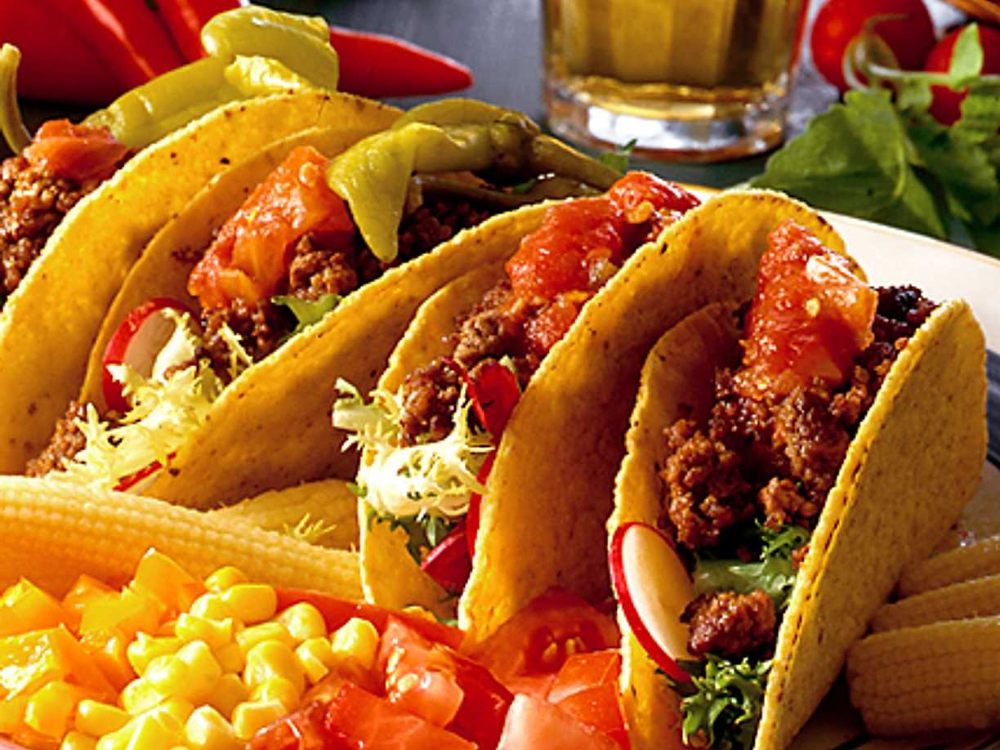

Tacos

Description
Fantastic tasting tacos. A favorite of mine, for sure.
Ingredients
- Taco bread
- Beef
- Seasoning
- Tomatoes and sallad
- A cheese of your tasting
Steps
- Start by chopping up the beef and then fry it along with the seasoning
- Start cutting the sallad
- Once the meet is well-done, make the tacos - don't forget the cheese
Not feeling for tacos? Head back to the front-page and consider my other recipes